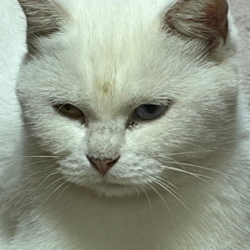
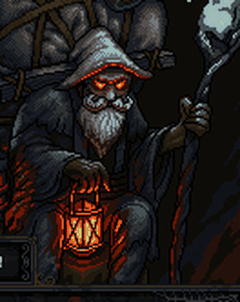

正在准备游戏资源…
第一次打开需要下载全部游戏资源（约 9 MB），下载完成后会保存在这台手机本地，之后打开几乎秒开、不再重复下载；游戏更新时也只补下载变动过的那几个文件。若进度条每次都从头跑，多半是手机系统把网页缓存清掉了，属自动重新下载。
战斗暂停中
版本 1.8
素材鸣谢（CC-BY）：Ice and Electricity Magic by Iwan 'qubodup' Gabovitch（opengameart.org/users/qubodup）· Spell 4 (fire) by Bart K. · Fire Aura by Astiar（astiar_rpg）· Magic sprite effects (Ardentryst) — Copyright 2008 Elle Trudgett · Earthspike spell animation by bart · AK-47 sprite by Cayden Franklin · Muzzle Flash by Aech · Gunshots by dklon · Metal Click by Mobeyee Sounds（mobeyee.com）· 背景音乐：Hesitation by PlayOnLoop（CC-BY 3.0）· Dark Ambience Loop by Iwan Gabovitch (qubodup)（CC-BY 3.0）· 闪电特效：Lightning animation by Calinou（CC0）· 2DFX Impact by Inguz Media（CC0）· Radial lightning effect by 13rice（CC0）· 法杖造型参考：[LPC] Magic Staff by bigbeargames（CC0）· 打击音效：Punch / Impact by Iwan 'qubodup' Gabovitch（CC-BY 3.0）· Thwack Sounds by Jordan Irwin (AntumDeluge)（CC0）· 冰锥/冰晶簇特效 by Clint Bellanger（CC-BY 3.0）· 图腾柱零件与长矛（OpenGameArt，CC0）· 梁鸡细佬精灵 Mystery Monk by Calciumtrice / Merry Dream Games（CC-BY 3.0）· 商人立绘 Red-Eyed Relicmonger by VoyPix（CC-BY 4.0）
本局已学总览（只读，不影响进程）· 学习上限：攻击 8 / 被动 15（宝箱系不占格）
当前角色属性（打开期间游戏继续，角色无敌、不被怪物攻击；关掉即恢复）· 已学技能请点局内「已学技能」按钮查看

作者：陈哈哈
版本 1.8
中山路的夜很普通——天突然暗了一块，像被扯开一个口子，七个人还没来得及跑，就被吸了进去。
开关即时生效并自动保存，进入游戏后同样保留；「升级自动打开学习页」打开后升级时会自动打开学习页，关闭时点局内「可学习」按钮进入（iPhone 震动需 iOS 17 以上系统）
单人冒险走原来的流程；多人模式与同一 WiFi 下的队友直连组队（真人＋NPC 合计 1–100 人）。
前提：所有人在同一网络环境下——连同一个 WiFi，或一部手机开热点、其他设备连上该热点组成的局域网，都算；不在同一网络环境时联机码不可用、无法直连。全程不经过任何服务器：房主开房生成一串合并码（前 6 位就是六位数联机码、后面是连接数据，每次开房随机生成），整段发给队友；队友只粘贴这一串加入（里面的联机码自动读出，不用再单独输入），再把确认码整段发回房主完成直连。房主开局后房间锁定。网页版与 APK 版用同一套合并码格式与校验：两端重打成同一版后，同一网络下用同一个合并码就能互联；版本不一致会被版本校验拦住。
本房间的六位数联机码（合并码的前 6 位，仅作核对用，不用单独发）。每位队友加入前点一次生成（会换一组新码）。
合并码（只发这一串，里面已含上面的联机码，整段复制发给队友）：
队友回传的确认码（只粘贴这一串）：
房主的合并码（只粘贴这一串，粘贴后会自动读出里面的联机码，不用再单独输入）：
你的确认码（已含联机码，整段发回给房主，房主只粘贴这一串即完成直连）：
NPC 由房主添加：进局后自由发挥（自主移动／选目标／攻击／放按键技）、升级自动学技能、会倒地可被救援（也会主动救倒地队友）、不进商店。真人＋NPC 合计上限 100 人（NPC 最多 99 名），英雄可以和队友重复选，敌人按合计人数强化。
提示：房主在对局中退出或掉线，本局立即结束且不结算。队友掉线重连暂未支持，掉线即离队（人数倍率按开局锁定不回降）。
醒来时已经不是中山路了。你只需要专心走位——普攻会自动发动，每位角色还有专属特殊技能。拾取经验宝石升级、在 Lv20 与 Lv45 觉醒，撑满 15 分钟，走到裂缝最深处，回到中山路！
与 班仔 一起出发
难度（选定后本局锁定 · 对普通与无尽模式均生效）
中山路的夜很普通，七个人走在回家的路上，天突然暗了一块，像被扯开一个口子，七个人还没来得及跑，就被吸了进去。醒来时已经不是中山路了，身体里多了一股陌生的力量。他们不知道这是什么，也没理它，只想先活下去、找路回家。探索中他们发现，在这里可以变强，越打越强。也正是在探索中，他们慢慢发现，裂缝不是自然开的，背后有一场阴谋。到后面他们才知道，藏在背后的是隐藏在背后的虚空的主宰劳农。他是虚空怪物的王，裂缝本身就是他力量的延伸。他靠裂缝吞噬世界壮大，因为地球意志挡着虚空扩张，他就想直接毁掉地球和地球意志。而身体里的力量，是地球意志留下的，正好克制他。七个人一路变强、在 Lv20 与 Lv45 觉醒，撑满 15 分钟的裂缝潮汐、击退五波 Boss，在虚空裂缝最深的地方打败了劳农。裂缝在身后慢慢合上，他们踩回熟悉的中山路，夜还是那个夜，只是他们再也不是普通路人了。（开场漫画可在选角页「世界观」重看。）
等级提升
点选一个同类型已学技能，再按「确认替换」：被替换的技能连同它的等级、分支与进化一并移除，新技能从 Lv1 开始（不继承旧等级）。取消则什么都不变。
获得宝箱专属特殊被动（独立栏位，不占技能槽）
放弃不占栏位、无惩罚，宝箱照常消耗；被放弃的特殊被动之后仍可能再开出来。

「嘿嘿……过路的，看看货？好东西，只收牛筋。」
牛筋 0只卖地图道具池里的东西，买下后掉落在你脚边，离开商店即拾取生效。
只逛不买也无妨——在他收摊之前走回来，还能接着买。
怪物大军淹没了你
劳农已经被打倒。裂缝在身后慢慢合上，七人踩回了熟悉的中山路。要继续挑战无尽模式吗？